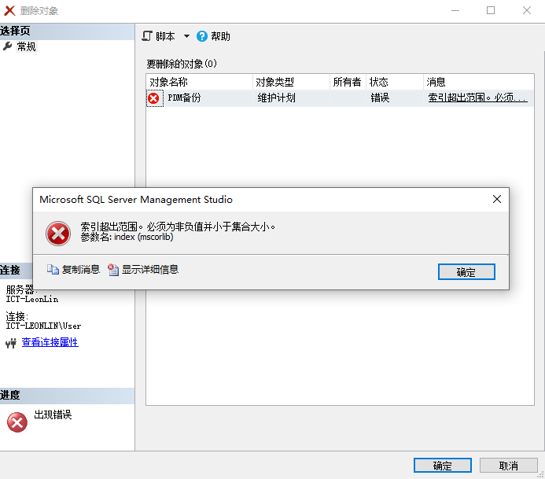

SQLserver-Q&A
索引超出范围
必须为非负值并小于集合大小。参数名: index (mscorlib)
错误18456
用户’sa’登录失败（错误18456）解决方法
1、SQL2008.sa’登录失败（错误18456）图文解决方法—-https://jingyan.baidu.com/article/656db918faf80fe381249c1e.html
2、怎样SQL Server 18452登录错误怎么解决?—-https://jingyan.baidu.com/article/f25ef25433bccf482c1b82b9.html
用户’sa’登录失败（错误18456）解决方案图解
当我们在使用sql server 的时候可能会遇见这样错误提示“无法连接到.,用户’sa’登录失败（错误18456）”,
具体的解决方案：
首先使用管理员身份打开SQL server ，并且以windows身份进入。
然后打开“安全性”–“登录名”中找到用户“sa”打开其属性面板。
接下来选择“常规”设置密码，并且点击“确定”保存。
然后选择“状态”–登录设置为“启用”，并且点击“确定”保存。
然后再打开sql服务器属性页面操作是“选择服务器右击–属性”，选择“安全性”将服务器身份验证选择为“SQL server 和 Windows 身份验证模式（s）”，点击“确定”保存。
最后再右击服务器选择“重新启动（A）”，将服务器重新启动就OK 了。
假如以上的办法还是不能解决就再进行一下的操作：
打开 “开始菜单”——“Microsoft SQL Server 2008”——“配置工具”——“Microsoft SQL Server 2008”选择“SQL server网络配置”将其中的“Named Pipes状态”“TCPIP状态”全部修改为“已启用”